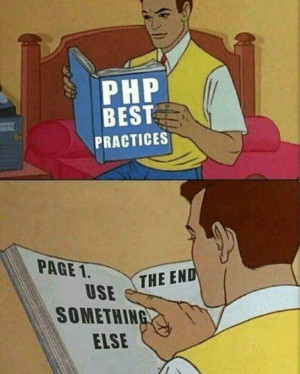

Technology Nation 2017
Что нового в программе?
Created by Yevhen Shemet
github:
yevhene/present-technology-nation-2017
heroku:
present-technology-nation-2017.herokuapp.com
https://github.com/
yevhene/technology-nation-labs
CS50 2017
Что осталось как есть:
Содержимое первых 5-и недель
5-ть первых pest-ов
(хакерские pset стали для more-confortable)
Что изменилось:
PHP (LAMP) -> Python (Flask, SQLite)

PSet-ы
6
Переписать задачи первых трех pset-ов на Python
7
CS50 Finance using Python
8
Mashup using Python
Инструменты
help50
обрабатывает сообщения об ошибках и выдает пояснения
debug50
интеграция отладки с Cloud IDE
Все инструменты написаны на Python и лежат на гитхабе https://github.com/cs50
Общие
Курс лучше адаптирован к возможностям EDX
Курс лучше организован
(между C и Python 2 недели)
На одну неделю меньше
Мало времени на финальный проект
MIT 6.00.1x
Python
8 недель
Не self-paced
Выпускной экзамен
Less comfortable
Helen Tabunshchyk
Python
Академическая среда
Data Science
Machine Learning
Web
C
Компактный
Работа с памятью
Близок к машинному коду
Спасибо